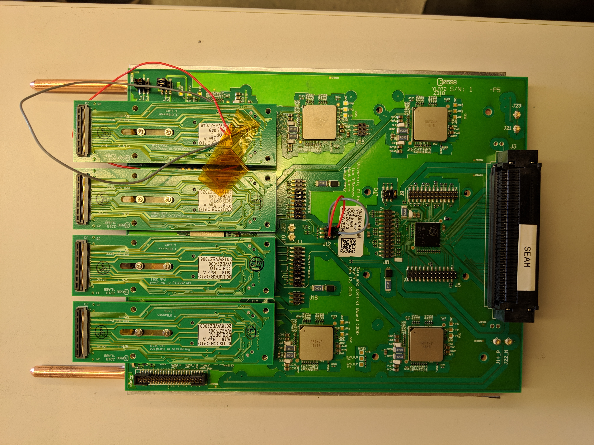

DCB assembly
Install screws with washers on VTXx-optical mezzanine
For each optical mezzanine, there's a VTTx (for data GBTx) or VTRx (for master GBTx) installed. The VTXx component is fixed on optical mezzanine with 2 M.1.4 screws and 2 M.1.4 washers:

Note
It is very hard to install these screws with the optical mezzanine plugged in the DCB mainboard. So remove these optical mezzanines from the DCB mainboard first.
To install these screws:
-
Place the washer on the screw and then place the screw upside down on the screwdriver while holding the screw in place with your thumb and index finger. This takes some practice but once you find what works then it will become much easier.
-
Turn the optical mezzanine upside down and then attempt to attach the screw into the hole until the screw will hold on its own.
-
Once the screw has started to tighten then flip the board over and attempt to screw the rest of the way.
Warning
When tightening the screw be careful not to apply too much pressure to the board. In order to avoid breaking the mezzanine apply most of the pressure to the plastic piece that the screws fit into instead of to the board itself.
Warning
Make sure that the washers sit on top of the board on both sides of each screw. Note that the screws should not be too tight. They should be tight enough that the washers do not move very much but also loose enough that the pressure from the washers will not damage the mezzanines.
Note
The optical mezzanines should not be placed back on the DCB at this time as they need to remain off of the board for final assembly.
Install thermal gap filler on the DCB backplate
There are pre-cut thermal fillers for the DCB backplate. Peel the film off and put it on, making sure that the pre-cut holes align with the holes of the DCB backplate. It is much easier to ensure the thermal gap filler is straight if two people work together.

Warning
Make sure that the thermal gap filler is placed on the flat side of the backplate.
The backplate is not symmetrical. The thermal gap should be put on the side that doesn't have countersuck screw holes.
Once the thermal gap filler looks straight then use a screw to take out any leftover thermal gap filler over the screw-holes that may have not been trimmed off. This will ensure that the backplate will connect smoothly to the DCB and that no residue from the thermal gap filler will attach to the DCB.
Cut graphite thermal gap filler for the heat spreaders
We need to install 2 heat spreaders for each DCB backplate. CERN provides us some graphite film to fill the gap between the DCB backplate and the heat spreaders. As little graphite as possible should protrude from the sides.
To cut the graphite:
-
Place the heat pipe on top of the graphite film as close to one of the edges as possible without letting any part of the underside be exposed. Make sure that the short edge of the heat pipe is also aligned with the edge of the graphite film.
-
Use an X-Acto knife to cut the graphite film along both sides of the heat pipe. Make sure to apply a large amount of pressure to the heat pipe as it will easily slip on the graphite.
-
Cut along the short end of the heat pipe which still has graphite protruding from underneath.
![Graphite gap filler]!(graphite_thermal_gap_filler.jpg)
Note
The last cut along the short end of the heat pipe can be tedious as the heat pipe can block the cutting path.
Note
A box cutter can also be used to cut the graphite film however an X-Acto knife may be easier. This is just personal preference.
Warning
Make sure the size of graphite gap filler is slightly smaller than that of the heatsink, to prevent graphite falling off to the electronic boards.
Install the heat spreaders on the DCB backplate
To install the heat pipes:
-
Place the graphite film directly underneath the heat pipe and place the heat pipe on the backplate. Make sure that the long protruding copper part of the heat pipe is aligned to sit over the flat end of the backplate. (Note the pictures below).
-
Use 10 M.3 countersunk screws to secure the heat pipe to the backplate. Note that it is easiest to screw in opposite diagonal screws first to fix the heat pipe.
-
Repeat for the second heat pipe.
Note
Correctly aligning the graphite film underneath of the heat pipe is tedious and usually takes some time.
Follow the pictures below for further guidance or if anything is not clear.


Warning
Pay attention to the direction of the heat pipe!
Graphite is highly conductive, both thermally and electronically. On the second picture, there is graphite sticking out. This is dangerous! Make sure to cut the graphite as close to the edge as possible. Kapton tape can be used but it is easiest to just be precise in the cutting.
Final assembly
Note
The final assembly is easiest with two people!
For final assembly of the board:
-
Remove the optical mezzanines from the DCB if they were not already removed.
-
Use 16 M.2.5 countersunk screws along with 16 long M.2.5 hexagonal nuts to install the DCB backplate onto the DCB. The screws should be placed on the backplate side and should fit into the countersunk holes while the nuts will sit on top of the DCB. Again fix opposite diagonal screws first.
Warning
The nuts on top of the DCB should not be rotated as they will damage the surface of the DCB. In order to prevent this have one person use a socket wrench to hold the nut in place while the other person uses a screwdriver to secure the screw.
-
Use 4 M.3 flat head screws along with 4 short M.3 hexagonal nuts to secure the master GBTx side of the DCB to the backplate. The flat head screws will sit on top of the DCB while the nuts will be placed on the backplate side.
Warning
The screws on top of the DCB should not be rotated as they will damage the surface of the DCB. In order to prevent this have one person use an allen wrench to hold the screw in place while the other person uses a socket wrench to secure the nut.
-
Finally, install the optical mezzanines back.
Warning
The standoff/screw on the DCB side should not be rotated to avoid damages to the surface of the DCB.
Input a picture of the final setup here.
Continuity check
Measure the resistance between any of the TP5 around the data GBTxs and the
aluminum backplate. The resistance should be very large to ensure the backplate
is not electronically connected to the DCB.